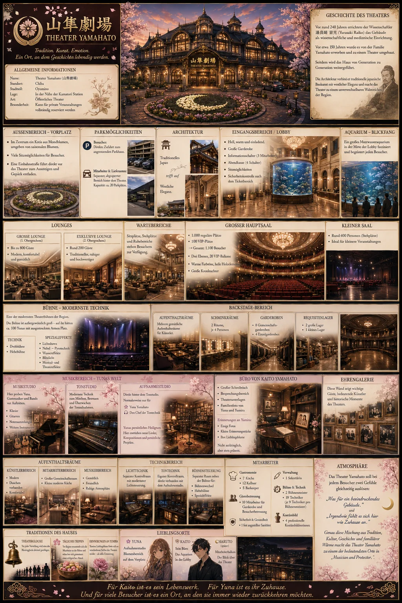

Persönliche Handschrift
Jedes Projekt soll seine eigene Stimme behalten und nicht wie ein Produkt von der Stange wirken.
Unabhängiges Kreativstudio
物語で世界をつなぐ。
Geschichten, die Menschen verbinden. Welten, die leise wachsen. Ein Studio, das kreative Freiheit und persönliche Handschrift bewahrt.
Geschichten verbinden Welten.
Das Studio
Studio Tsukihashi ist ein unabhängiges Autoren- und Kreativstudio für Manga, Romane und gemeinsame Projekte. Im Mittelpunkt stehen nicht Masse oder Geschwindigkeit, sondern Figuren, Beziehungen und Welten mit einer eigenen Seele.
„Wir wachsen nicht, um größer zu werden. Wir wachsen, um bessere Geschichten erzählen zu können.“
Studio-Philosophie
Jedes Projekt soll seine eigene Stimme behalten und nicht wie ein Produkt von der Stange wirken.
Atmosphäre, Nähe und kleine Gesten dürfen ebenso wichtig sein wie große Wendepunkte.
Langfristige kreative Zusammenarbeit steht über kurzfristiger Produktion.
Unsere Projekte
Studio Tsukihashi ist so aufgebaut, dass neue Geschichten hinzukommen können, ohne die Identität bestehender Projekte zu verlieren.

Ideenentwurf · visuelle Referenz月のセレナーデ
Eine Geschichte über Musik, Schutz, Verlust und jene stillen Begegnungen, die ein Leben verändern können.
Zwei Autoren, zwei Welten und eine Grenze, die plötzlich nicht mehr existiert.
In Entwicklung des GrundkonzeptsEine weitere eigenständige Welt von Studio Tsukihashi. Mehr wird enthüllt, wenn ihre Zeit gekommen ist.
Weitere Informationen folgenFür die Zukunft gebaut
Dieses neue Fundament schafft Raum für weitere Projekte, vollständige Sprachversionen, Charakterseiten, Weltkarten, Blogartikel, Pressematerial und später offizielle Manga-Inhalte.
Kontakt
Für Projektanfragen, kreative Zusammenarbeit und zukünftige Kooperationen ist Studio Tsukihashi direkt erreichbar.